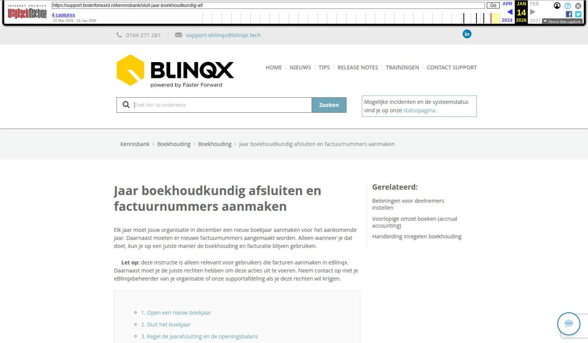

Jaar boekhoudkundig afsluiten en factuurnummers aanmaken

Tekstinhoud
Jaar boekhoudkundig afsluiten en factuurnummers aanmaken
Elk jaar moet jouw organisatie in december een nieuw boekjaar aanmaken voor het aankomende jaar. Daarnaast moeten er nieuwe factuurnummers aangemaakt worden. Alleen wanneer je dat doet, kun je op een juiste manier de boekhouding en facturatie blijven gebruiken.
Let op: deze instructie is alleen relevant voor gebruikers die facturen aanmaken in eBlinqx. Daarnaast moet je de juiste rechten hebben om deze acties uit te voeren. Neem contact op met je eBlinqxbeheerder van je organisatie of onze supportafdeling als je deze rechten wil krijgen.
1. Open een nieuw boekjaar
2. Sluit het boekjaar
3. Regel de jaarafsluiting en de openingsbalans
4. Maak nieuwe factuurnummers aan
Om het huidige jaar boekhoudkundig af te sluiten (jaarafsluiting), moeten we een nieuw boekjaar openen en een boekjaar sluiten.
Het stappenplan voor de jaarafsluiting ziet er als volgt uit:
1. Open een nieuw boekjaar
Voordat het boekjaar gesloten kan worden dient het volgende boekjaar geopend te zijn. Dit nieuwe boekjaar is nodig om de openingsbalans te kunnen boeken en om te voorkomen dat er in het geheel geen boekingen meer gemaakt kunnen worden. Het openen van een nieuw boekjaar is mogelijk onder de Financieel – Stamgegevens – Periodes onderhoud.
Hier klik je op het plussymbool een nieuw boekjaar aan te maken. Vervolgens klik je op het opslaanicoon om op te slaan.
2. Sluit het boekjaar
Je sluit een boekjaar in eBlinqx door naar Financieel – Stamgegevens – Periodes onderhoud te gaan. In dit overzicht vind je alle boekjaren die in eBlinqx zijn aangemaakt. Deze boekjaren worden voorafgegaan door een gekleurd icoon.
Groen: Alle onderliggende periodes in het boekjaar zijn open
Geel: Één of meerdere onderliggende periodes in het boekjaar zijn gesloten
Rood: Het jaar is gesloten
Door op het groene/gele icoon te klikken worden alle onderliggende periodes in één keer gesloten en wijzigt het icoon in rood. Wanneer er periodes gesloten zijn, kunnen deze opnieuw worden geopend door op het rode icoon te klikken. Deze wordt vervolgens weer groen. Hierdoor is het eenvoudig mogelijk om eventuele latere correctiejournaalposten alsnog in het goede boekjaar te verwerken. Na het verwerken van deze correcties kan de jaarafsluiting opnieuw worden gedraaid.
Wanneer het boekjaar wordt gesloten staat er rechts aan het einde van de regel een kalender icoon. Door hierop te klikken wordt de feitelijke jaarafsluiting opgestart.
3. Regel de jaarafsluiting en de openingsbalans
Het uitvoeren van de daadwerkelijke jaarafsluiting is een eenvoudig proces:
Vul de omschrijving in die je wilt gebruiken bij het boeken van de openingsbalans.
Geef de grootboekrekening in waarop het resultaat van het af te sluiten boekjaar moet worden geboekt.
Vervolgens klik je op 'Jaar afsluiten'.
De openingsbalans voor het nieuwe boekjaar wordt nu automatisch geboekt in periode 0 van het nieuwe jaar.
Let op: Voor de facturatie in het nieuwe jaar dient er een nieuwe boekjaar geopend te zijn.
4. Maak nieuwe factuurnummers aan
Na het aanmaken van een nieuw boekjaar, kan in de financiële module een nieuwe facturenreeks worden aangemaakt.
Ga naar de modules 'Financieel' in het menu rechtsboven
Ga naar 'Factuurnummers overzicht' onder het kopje 'Facturatie'
Maak een nieuwe reeks aan voor het aankomende jaar, bijvoorbeeld 20220001. Klik hiervoor op het wijzigingsicoon achter het jaartal. Typ vervolgens in het witte veld achter het jaartal het volgend factuurnummer
Sla de nieuwe factuurnummerreeks op.
Laatste update: 15 oktober 2025
Was deze informatie nuttig?
Ja Nee